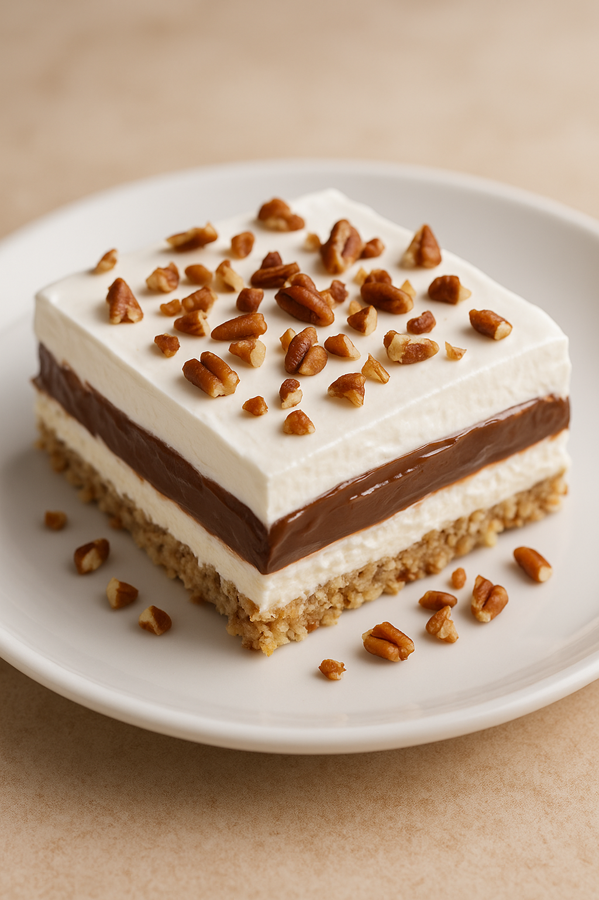

4 Layer Pie
Submitted by Penny Dillard
Recommended Tools
As an Amazon Affiliate I earn from qualifying purchases.
- 9×13-inch baking dish (for the crust and assembled layers)
- Mixing bowls (separate bowls for crust, cream cheese layer, and pudding layer)
- Hand mixer or stand mixer (for beating cream cheese mixture and preparing pudding) — I absolutely couldn't live without my KitchenAid Stand Mixer. It gets used multiple times per week!
- Rubber spatula (for spreading each layer evenly)
- Measuring cups and spoons (for flour, milk, and pecans)
- Baking sheet or oven-safe rack (optional—helps stabilize the pan in the oven)
- Refrigerator (to chill and set each layer) — This is for those that need a full sized refrigerator and are living on a budget. Kenmore is an excellent brand of appliance
Ingredients
Layer 1
- 1 ½ cups flour
- 1 cup chopped pecans
- 1 stick butter, melted
Layer 2
- 1 (8 oz) package cream cheese, softened
- 1 cup powdered sugar
- 8 oz Cool Whip
Layer 3
- 1 large or 2 small packages instant chocolate pudding
- 2 ¾ cups milk
Layer 4
- 8 oz Cool Whip
- Chopped pecans for topping (optional)
Directions
- Layer 1: Mix flour, chopped pecans, and melted butter until combined. Pat mixture into a 9×13-inch pan. Bake at 350°F for 20 minutes. Cool completely.
- Layer 2: In a mixing bowl, beat cream cheese, powdered sugar, and Cool Whip until smooth. Spread over cooled crust. Chill until set.
- Layer 3: Prepare instant chocolate pudding with milk using a mixer until thickened. Spread over the cream cheese layer. Chill until set.
- Layer 4: Spread remaining Cool Whip over the pudding layer. Top with chopped pecans. Serve chilled.
Notes
- For the crust, make sure it cools completely before adding the next layers or they’ll melt and mix.
- Use full-fat cream cheese for the smoothest texture in the second layer.
- Chill the dessert for at least 4 hours (or overnight) for clean slices and firm layers.
- Instant pudding sets best with cold milk; don’t use plant milk unless the box specifies it will work.
- You can substitute homemade whipped cream for Cool Whip, but the final texture will be softer.
- Toast the pecans before adding them to boost flavor and crunch.
- For a lighter dessert, cut into 18–24 pieces — it’s rich!
- This dessert keeps well in the fridge for 3–4 days; do not freeze.
- Add crushed pecans or shaved chocolate on top for a more decorative finish.
- Make sure each layer is fully cooled before adding the next to keep layers distinct and sharp.
Nutritional Information
Serving Size: 18 servings
Calories: 380
Fat: 25 g
Carbohydrates: 33 g
Protein: 6 g